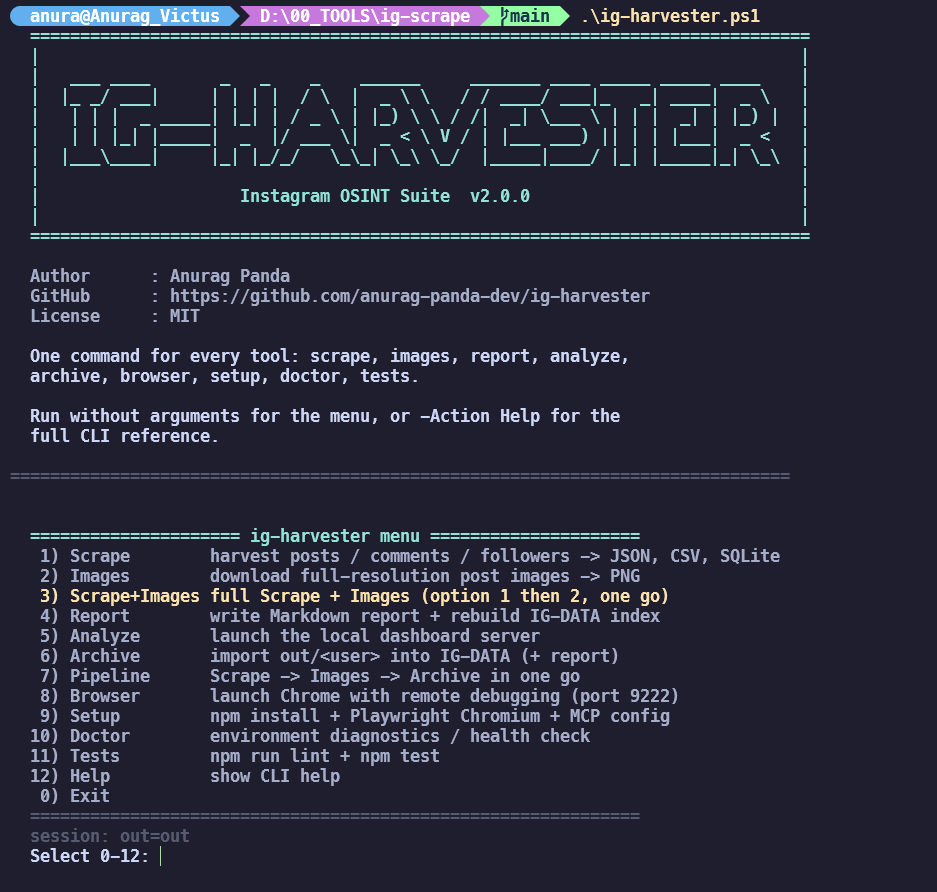

What is ig-harvester?
ig-harvester is a free, open-source (MIT) Instagram OSINT tool for legitimate research, journalism, security audits and education. It attaches to a Chrome window you are already logged into (via CDP), so it sees exactly what your session sees — then harvests a target profile into structured, analyzable data: posts, comment threads with replies, follower and following lists, media URLs, hashtags and mentions.
Everything is exported as JSON, CSV and SQLite, with a resume cache that lets interrupted runs continue where they stopped. A companion downloader saves every post image — each carousel slide included — as a full-resolution, timestamped PNG, and the ig-analyzer dashboard turns the harvest into engagement, posting-pattern, network and bio-intel metrics on a local web page.
🧰 One repo, four tools
scrape-ig, ig-images, ig-analyzer,
report — orchestrated by a single PowerShell entry point.
🕵️ Session-driven, no API keys
Attaches to your logged-in Chrome over CDP — no Instagram API, no tokens, nothing leaves your machine.
📦 Structured everything
JSON + CSV + SQLite out of the box, plus dated archives, Markdown reports and a master index.
Features
Everything below is in the box — no plugins, no paid tiers.
🔍 Triple-source extraction
Embedded Relay JSON + semantic DOM + screenshots, cross-checked for complete payloads.
🗂️ Full profile harvest
Posts (--posts all), comment threads with replies and like counts, followers, following.
🖼️ Image downloader
Every post image and carousel slide saved as a real PNG at original upload resolution, timestamped.
⏭️ Resume caching
SQLite cache by shortcode — interrupt a run and re-run it, it continues where it stopped.
📈 Built-in analytics
Engagement rate, best posting hour/day, top hashtags and mentions, follower/following ratio, bio signals.
📊 Live dashboard
ig-analyzer serves charts and metrics for any scraped or archived profile on localhost.
🥷 Operational security
HTTP/SOCKS5 proxy support, jittered human-like delays, retry with exponential backoff.
🛟 Uninterruptible runs
Token-bucket rate limiting, progress bars, structured JSON logging and deterministic exit codes.
🐳 Outputs & deployment
JSON / CSV / SQLite writers, Docker image, one-click Windows scripts, MCP example config.
Quick Start
Three steps. Prerequisites: Node.js ≥ 20, system Chrome, and a burner Instagram account you are authorized to use.
Option 1 PowerShell — single entry point Windows, recommended
One script drives the whole suite. Run it bare for an interactive menu, or give it an action to run once (automation-friendly, exit codes propagate):
# Interactive menu — asks for the target, walks you through the run settings, confirms before running
.\ig-harvester.ps1
# One-click setup & run (installs deps, Playwright Chromium, merges MCP config)
.\dependencies\start.ps1 --profile someuser --comments --followers --following --sqlite
# Run one action directly (aliases: Both, Combo, scrape+images)
.\ig-harvester.ps1 scrape someuser --posts 50 --comments
.\ig-harvester.ps1 ScrapeImages someuser --posts 50 --comments
# Non-interactive full pipeline: scrape -> images -> archive, with a step summary
.\ig-harvester.ps1 -Action Full -User someuser -Posts 50 -Comments -Yes
# Preview exactly what would run, without running it
.\ig-harvester.ps1 -Action Images -User someuser -Force -DryRun
# Environment health check (Node version, deps, CDP endpoint)
.\ig-harvester.ps1 -Action DoctorPreparing the browser (both options)
# 1. Launch Chrome with remote debugging on port 9222 (dedicated profile)
.\dependencies\launch-chrome-debug.ps1
# 2. Log into a BURNER Instagram account in that window, then keep it openOption 2 Node.js — direct CLI cross-platform
git clone https://github.com/anurag-panda-dev/ig-harvester.git
cd ig-harvester
npm install
# Full OSINT harvest: posts + comments + follower/following lists + SQLite
node dependencies/scrape-ig.mjs --profile someuser --posts 50 --comments --followers --following --sqlite
# Every post the profile grid serves (no 30-post cap)
node dependencies/scrape-ig.mjs --profile someuser --posts all
# Download every post image (carousels included) as timestamped PNGs
node dependencies/ig-images.mjs --profile someuser --posts 50
# Analyze the results in a live local dashboard -> http://localhost:8080
node dependencies/ig-analyzer.mjs --user someuser
# With a proxy, or from a config file (defaults < config.json < CLI)
node dependencies/scrape-ig.mjs --profile someuser --proxy http://127.0.0.1:8080
node dependencies/scrape-ig.mjs --config config.jsonnpm scripts
| Script | Runs |
|---|---|
npm run scrape | The scraper (scrape-ig.mjs) |
npm run images | Post image downloader (ig-images.mjs) |
npm run analyze | Live dashboard (ig-analyzer.mjs) |
npm run report | Markdown report + IG-DATA index |
npm test | Node's built-in test runner over tests/*.test.mjs |
npm run lint | Syntax-checks every entry point and core module |
docker build -t ig-harvester . ·
docker run -v $(pwd)/out:/app/out ig-harvester --profile someuser --comments ·
docker compose run ig-harvester --profile someuser --comments --followers
Full CLI flags reference
Every scraper flag works in both entry points — --flag value,
--flag=value and PowerShell-style -Flag value are all accepted.
Unknown flags are forwarded verbatim to the Node tools.
| Flag | Default | Description |
|---|---|---|
--profile <name> | – | Target username |
--url <url> | – | Full Instagram URL instead of a username |
--posts N|all | 30 | Max posts to scrape — all (or 0) = every post the grid serves |
--comments | off | Harvest post comments with reply threads and like counts |
--followers | off | Harvest the full follower list |
--following | off | Harvest the full following list |
--shots | off | Capture screenshots of everything scraped |
--out DIR | out | Output directory |
--cdp URL | http://127.0.0.1:9222 | Chrome DevTools Protocol endpoint to attach to |
--headless | off | Run headless instead of attaching to a visible window |
--proxy URL | – | HTTP or SOCKS5 proxy for operational security |
--config FILE | – | JSON config file — layering is defaults < config < CLI (CLI wins only for flags you passed) |
--sqlite | off | Also write a SQLite database alongside JSON/CSV |
--no-resume | – | Disable the resume cache and start fresh |
--force | off | ig-images only: re-download files already on disk (redo a bad run) |
--delay-min N | 900 | Minimum delay between actions (ms) |
--delay-max N | 2600 | Maximum delay between actions (ms) — jittered per request |
--log-level | info | debug / info / warn / error |
--json-log | off | Structured JSON logging (child loggers, machine-parseable) |
Flag groups by task
🎯 Targeting
--profile --url --posts --config
🧩 What to collect
--comments --followers --following --shots --sqlite
🌐 Connection
--cdp --headless --proxy --out
⏱️ Pacing & logging
--delay-min --delay-max --log-level --json-log --no-resume
ig-harvester.ps1 — actions
Bare invocation opens a numbered, looping menu (target first, then run settings,
then a Run … with current settings? [Y/n] confirmation). Naming an action runs
exactly one job and returns its exit code.
| Action | Runs | Purpose |
|---|---|---|
Scrape | scrape-ig.mjs | Posts, comments, followers/following → JSON/CSV/SQLite |
Images | ig-images.mjs | Full-resolution post images → PNG |
ScrapeImages | both | Full scrape + images in one go (menu option 3; aliases Both, Combo) |
Report | report.mjs | Markdown report + IG-DATA index (-Reindex = every profile) |
Analyze | ig-analyzer.mjs | Local dashboard server (-Port) |
Archive | import-data.ps1 | out/<user> → dated IG-DATA snapshot + report |
Full | pipeline | Scrape → Images → Archive with a step summary |
Browser | launch-chrome-debug.ps1 | Chrome with remote debugging on port 9222 |
Setup | npm/npx + MCP | Dependencies, Playwright Chromium, MCP config merge |
Doctor | built-in | Environment diagnostics (alias Status) |
Tests | npm | npm run lint + npm test |
Help | built-in | CLI reference (also -Help / -h) |
- GNU passthrough — every scraper flag works in both shapes:
--delay-min 900 --log-level debugand-Posts 50 -Comments. - Post limits —
-Posts <n>sets the cap (tools default to 30);-Posts all,-AllPostsor--posts allharvest everything the grid serves. -Yes= non-interactive (answers every prompt with the default);-DryRun= print the exact commands without executing them.- Preflight — Node ≥ 20, npm dependencies and the CDP endpoint are checked before anything runs; if CDP is down it offers to launch Chrome for you.
- Exit codes —
0success ·1step/preflight failed ·2usage error or cancelled input.
Output layout
All files are saved inside a folder named after the username.
out/someuser/
someuser.json # full payload + analytics
someuser-posts.csv # one row per post
someuser-comments.csv # one row per comment
someuser-followers.csv # one row per follower
someuser-following.csv # one row per following
someuser.db # SQLite database (--sqlite)
screenshots/*.png # screenshots (--shots)
images/*.png # post images (ig-images)
.cache.db # resume cache (internal)Archiving to IG-DATA
out/ is scratch space — the next scrape can overwrite it.
dependencies/import-data.ps1 copies each run into a structured archive, keeps every
import as a dated snapshot, and regenerates the analysis reports and master index:
.\dependencies\import-data.ps1 --source out/someuser # archive + report
.\dependencies\import-data.ps1 --reindex # rebuild INDEX.md only
.\dependencies\import-data.ps1 --source out/someuser --no-report| File | What it is |
|---|---|
INDEX.md | Every profile in one table — followers, engagement, last post, run count |
README.md | One-profile card: stats, quick-read insights, links to every file |
analysis/report.md | Identity, snapshot, insights, engagement, posting pattern, content mix, top posts, hashtags, network, bio signals, run history |
analysis/analytics.json | The same numbers, machine-readable |
latest/ | The most recent import — safe to point tooling at |
runs/<timestamp>/ | Every import, forever — re-scrapes never overwrite history |
Media is stored once: runs/<timestamp>/
keeps JSON, CSV, .db and screenshots, while multi-GB image folders live only in
latest/images/.
Built-in analytics
The scraper computes OSINT metrics automatically on every run:
{
"engagement": {
"totalLikes": 1234, "totalComments": 56,
"avgLikes": 45, "avgComments": 2,
"engagementRate": "1.23%", "postsAnalyzed": 30
},
"posting": {
"postsPerWeek": "0.21",
"bestPostingHour": "18:00",
"bestPostingDay": "Saturday",
"daysActive": 1000
},
"account": { "estimatedCreated": "2024-01-01T00:00:00.000Z", "estimatedAgeDays": 1000 },
"content": {
"topHashtags": [{ "tag": "DevProfile", "count": 5 }],
"topMentions": [{ "user": "friend1", "count": 3 }],
"mostLiked": [{ "shortcode": "ABC123", "likes": 500 }],
"carouselPosts": 10, "reelPosts": 5, "photoPosts": 15
},
"network": {
"followerCount": 299, "followingCount": 925,
"followerFollowingRatio": "0.32",
"verifiedFollowers": 2, "verifiedFollowing": 5
},
"bio": { "hasEmail": true, "email": "user@example.com", "hasUrl": true, "length": 150 }
}ig-analyzer — live dashboard
After scraping, analyze the data with a live web dashboard on
http://localhost:8080:
node dependencies/ig-analyzer.mjs # auto-detect latest scraped user
node dependencies/ig-analyzer.mjs --user someuser --port 8080
.\dependencies\ig-analyzer.ps1 --user someuser # one-click on Windows
# Also reads archived profiles directly (profile folder, latest/ or a single run)
.\dependencies\ig-analyzer.ps1 --dir ..\IG-DATA\someuser| Section | What it shows |
|---|---|
| Profile overview | Bio, stats, verified/private badges |
| Engagement metrics | Rate, total/average likes and comments |
| Charts | Likes per post, posts by hour, posts by day |
| Content analysis | Top hashtags, top mentions, most liked/commented |
| Posting patterns | Best time, frequency, account age |
| Network stats | Follower/following ratio, verified counts |
| Bio analysis | Email, phone and URL detection |

Troubleshooting & FAQ
- Why do I get exactly 30 posts when the profile claims more?
- Post links are read from the profile grid, so a run returns only what Instagram serves to
your session. The default cap is
--posts 30— raise it (--posts 500) or use--posts allfor every post the grid serves. - I only got 12 / 24 / 36 posts — is it broken?
- The grid stopped paginating (slow or gated layout). Re-run: the resume cache continues
where it stopped, and the log line
grid: N permalink(s) - <reason>names the exact stop reason.grid stopped early: N of M posts foundis printed whenever the profile header is higher than what the grid returned. - 0 posts plus "This account is private"
- The logged-in session doesn't follow the target, or the follow is still pending
(
Requested). Attach Chrome logged in as the burner that already follows the account — a pending request serves nothing. - 0 posts and no warning?
- The profile doesn't exist or the account is blocked. Check the spelling and account status.
- Where does the tool write, and can I re-run safely?
- Everything lands in
out/<username>/. The SQLite resume cache (.cache.db) makes re-runs incremental by shortcode; pass--no-resumeto start fresh. Archive finished runs intoIG-DATAbefore the next scrape of the same profile to keep history intact. - Which flags does the image downloader accept?
ig-imagesshares the scraper's targeting and connection flags (--profile/--url,--posts,--out,--cdp,--headless,--proxy,--delay-*,--log-level,--config) plus--force— and collects nothing else: no JSON/CSV, no comments, no follower lists.- How do I run it from CI or a script?
- Use action mode with
-Yes(non-interactive) and read the exit code:0success,1step/preflight failed,2usage error or cancelled input.-DryRunprints the exact commands first.
Project
Testing
npm run lint
npm testArchitecture
- Entry points —
ig-harvester.ps1+ four Node CLIs independencies/ - src/extractors — Relay JSON miner, semantic DOM scraper, shared parsers
- src/scraper — profile, posts (resume), users, analytics, screenshots, images
- src/storage — SQLite resume cache, JSON/CSV/SQLite writers
- src/utils — structured logger, retry/backoff, rate limiting, progress
Requirements
- Node.js ≥ 20
- Chrome (system) with remote debugging
- A burner Instagram account you are authorized to use
- Optional — Docker, HTTP/SOCKS5 proxy
Links
GitHub repository · Releases · Documentation (README) · Guide · Contributing · MIT License · Author — Anurag Panda